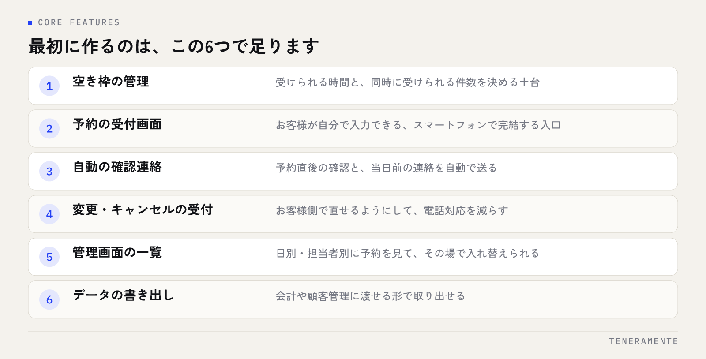

予約管理システムを自社専用で作るべきかどうかは、機能の多さではなく、自社の受付ルールを既製サービスの設定画面で表現しきれるかで判断します。合わない部分を人の手で埋め始めた時点が、作ることを検討する入口です。この記事では、既製サービスとの違い、必要な機能、着手前に決めること、費用と期間の考え方を順に整理します。
📌 この記事の結論
自社専用にするかどうかは、予約の件数ではなく受付ルールの複雑さと、それを人が手で埋めている時間で決めます。既製サービスの設定で足りているうちは、乗り換える理由はありません。
01既製の予約サービスが合わなくなる5つのサイン
既製の予約サービスは、一般的な受付の形に合わせて作られています。自社の受付ルールがそこから外れるほど、設定では吸収できない部分が増えていきます。次のような状態が続いているなら、合わなくなってきたサインです。
- 予約が入ったあと、担当者が手で割り当て直している
- 受け付けたい条件（同時に受けられる人数、設備の組み合わせ、担当者の資格）を設定で表現できない
- 予約サービスとは別に、確認用のExcelを二重で持っている
- お客様に送る案内文を、毎回コピーして手で書き換えている
- 予約データを会計や顧客管理に移すのに、毎月まとまった手作業が発生している
1つ当てはまる程度なら運用で吸収できます。判断すべきは、この手作業が毎週・毎月繰り返し発生しているかです。繰り返す作業だけが、作ることで消えます。
02自社専用と既製サービスは何が違うのか
違いは機能の量ではなく、「合わせる方向」です。既製サービスは自社の運用をサービス側に合わせ、自社専用は仕組みを自社の運用に合わせます。どちらが優れているという話ではなく、どちらの合わせ方が自社にとって無理がないかという選択です。
| 比較する点 | 既製の予約サービス | 自社専用のシステム |
|---|---|---|
| 始めるまで | 申し込んだその日から使える | 設計と開発の期間が必要 |
| 費用の形 | 月額が中心。初期費用は小さい | 初期費用がかかり、その後は保守費用 |
| 受付ルール | 用意された設定の範囲で表現する | 自社のルールをそのまま形にできる |
| 他システムとの連携 | 対応している範囲に限られる | 必要な連携を作れる |
| 変更したいとき | 提供元の対応を待つ | 自社の判断で直せる |
既製サービスで足りているなら、乗り換える必要はありません。判断が必要になるのは、設定で表現できない部分を人が埋め始めたときだけです。内製と外注の切り分けについては業務アプリは内製か外注かも参考になります。
03予約管理システムに最低限必要な機能
自社専用にすると、つい機能を足したくなります。最初に作るのは、予約を受けてから当日を迎えるまでが止まらずに回る範囲に絞ってください。次の6つが揃っていれば、多くの現場は運用に乗ります。

- 空き枠の管理：受けられる時間と、同時に受けられる件数を決める土台
- 予約の受付画面：お客様が自分で入力できる、スマートフォンで完結する入口
- 自動の確認連絡：予約直後の確認と、当日前の連絡を自動で送る
- 変更・キャンセルの受付：お客様側で直せるようにして、電話対応を減らす
- 管理画面の一覧：日別・担当者別に予約を見て、その場で入れ替えられる
- データの書き出し：会計や顧客管理に渡せる形で取り出せる
このうち後回しにされがちなのが最後の書き出しです。ここが無いと、せっかく集めた予約データが手入力で外に運ばれることになり、削ったはずの手作業が戻ってきます。
04作る前に決めておく4つのこと
予約管理システムで失敗するほとんどの原因は、機能ではなく前提の決め漏れです。着手前に、次の4つを社内で決めておいてください。
- どの予約を対象にするか：全チャネルを一度に載せず、電話・Webなど入口を1つ選んで始めます
- 誰が枠を管理するか：空き枠を作る人と、当日の変更を判断する人を決めます
- キャンセルと変更のルール：いつまで、何回まで、誰が対応するか。ここが曖昧だと画面が決まりません
- 予約データをどこへ渡すか：会計・顧客管理・請求のどこに繋げるかを先に決めます
3つ目と4つ目は、業務側で決めるべきことです。ここを開発側に丸投げすると、仕様が現場の運用と食い違ったまま完成します。決められない項目があるなら、その部分は最初のバージョンから外すのが安全です。
05費用と期間の考え方
費用は「初期費用」と「その後の月額」に分けて読みます。TENERAMENTEの業務Webアプリ開発は初期費用30万円〜で、そこにヒアリングと要件整理、画面と機能の設計、開発とテスト、公開作業までが含まれます。公開後はサーバー費用と保守の月額が続きます。見積もりを比べるときは、金額の大小よりどちらに何が入っているかを見てください。
期間を左右するのは開発作業そのものより、受付ルールを社内で決める時間です。当社では3回のミーティングで要件を固め、最短2週間で試作（PoC）を動かす進め方をとっています。まず動くものを触ってから細部を決めたほうが、仕様書だけで詰めるより手戻りが減ります。費用の内訳は業務Webアプリ開発の費用相場で詳しく整理しています。
予約の仕組みは、作った日ではなく、変えたくなった日から本当の価値が出ます。
06よくある失敗
いちばん多いのは、既製サービスでできていたことを作り直そうとするケースです。自社専用にする価値は、既製では表現できなかった受付ルールの部分にあります。同じものを作り直しても、費用がかかるだけで業務は変わりません。
次に多いのが、最初から全部の予約チャネルを載せようとして、公開が遠のくパターンです。電話予約も、店頭予約も、法人からの依頼も同時に扱おうとすると、決めるべきルールが一気に増えます。入口を1つに絞って公開し、動いてから広げるほうが確実です。
もう1つは、運用する人を決めないまま作ることです。空き枠を作る人が決まっていないシステムは、公開の翌週から枠が埋まらなくなります。作る前に、日々の運用を担当する人を名前で決めておいてください。
07よくある質問
予約件数が少ないうちは、既製サービスのままでよいですか？
今使っている予約サービスのデータは引き継げますか？
作ったあとの変更は自分たちでできますか？
08まとめ：合わない部分を人が埋め始めたら検討する
予約管理システムを自社専用で作るかどうかは、予約の件数でも既製サービスの機能の多さでもなく、自社の受付ルールを設定画面で表現しきれているかで決まります。表現できない部分を人の手で埋め始め、その作業が毎週繰り返されているなら、検討する時期です。
進めると決めたら、着手前に「対象にする予約」「枠を管理する人」「変更とキャンセルのルール」「データの渡し先」の4つを決めてください。そのうえで入口を1つに絞って公開し、動かしながら広げる。この順番なら、公開が遠のかず、現場の運用ともずれません。
TENERAMENTEでは、業務改善AIアプリ開発として、予約管理のような日々の受付業務を自社の運用に合わせた形で作っています。既製サービスの設定変更で足りるのか、作るべきなのかを見極めたい段階でも構いませんので、ご相談ください。